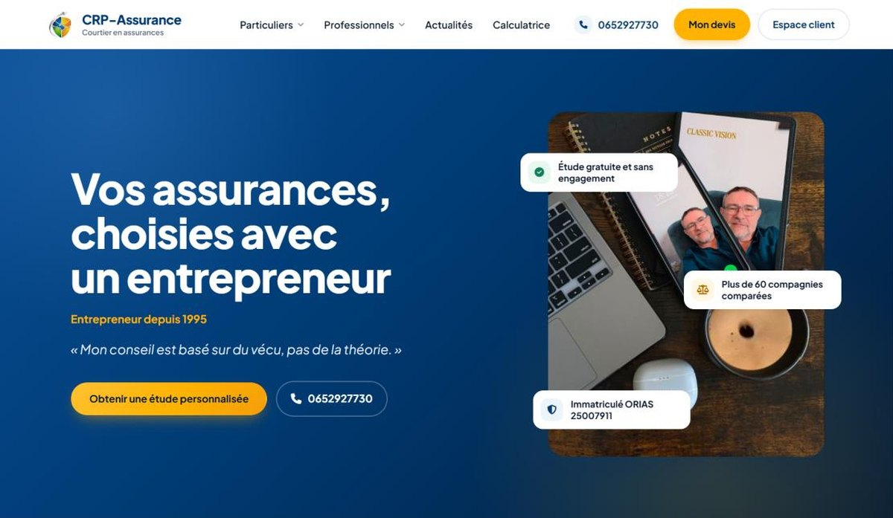
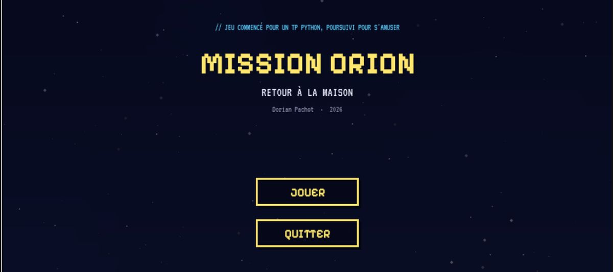

En production
SYNCRO
Application mobile de planification d'équipe, développée pendant mon stage chez Suitime et publiée sur l'App Store et Google Play.
Lire la présentationProjets
Chaque projet a sa page de présentation : le contexte, ce que j'ai réalisé, les choix techniques, les difficultés et ce que j'en retiens.
Application mobile de planification d'équipe, développée pendant mon stage chez Suitime et publiée sur l'App Store et Google Play.
Lire la présentation
Application Symfony de planning des cours de MediaSchool Rouen.
Lire la présentation
Site PHP et MySQL d'un cabinet d'assurance, avec back-office et espace client.
Lire la présentation
Jeu spatial en Python, jouable dans le navigateur grâce à WebAssembly.
Lire la présentation